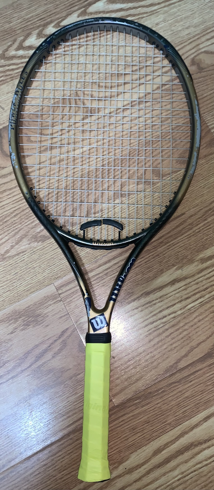

Daniel's Athletic Career
Daniel's school has always been known to be a welcoming community to new players. The tennis program was no exception to this, with Daniel being one of the many to benefit from this program.
The Beginning
Freshmen year Daniel played casually on the school's extra team. He did not plan on playing any competitive matches this year, but coaches noticed he had an affinity for this sport. People did not believe that he had absolutley no experience, because he seemed to be a natural. He was asked to upgrade teams this year but unfortunatley it never happened since the season was cut short due to COVID. COVID would also ruin Daniel's sophmore year with his school fully missing that season.
Coming back junior year Daniel had low expectations for tennis, since he already missed two years, but was still ready to try his best. He noticed his skills haven't gone anywhere, and for a "beginner" he had a lot of potential.
Junior Year
Towards the beginning of the season, he did not play much. He showed some glimpses of talent but never really lived up to what he could become until the second half of the season.
It all started when Daniel was up agianst 3rd in the whol district expecting a loss. He came in expecting nothing, but ended up flawlessly destroying his opponent, 8-0. There may have been a little luck + outside factors leading to this destruction, but Daniel used it as confidence. He was his team's primary singles player throughout the season. The team ended up having a solid finish, placing 3rd in the districts, with solid preformances from Daniel.
Come the time of awards night, Daniel was not expecting much. But little did he know, he would be greeted with two different awards. He was first given the Most Improved Varsity player award, chosen by the coaches. Daniel was satisfied with this but unexpectedly he won another award, this one actually being given from the distrcit. He was placed in the All-Star 1st team for singles, completing his 1st real season at CFS Tennis.